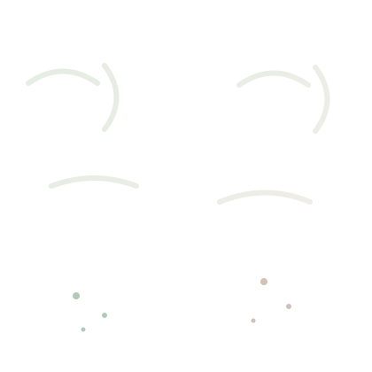

ROYAUME DU MAROC
UNIVERSITÉ MOHAMMED PREMIER
ÉCOLE SUPÉRIEURE DE TECHNOLOGIE - OUJDA (ESTO)
DÉPARTEMENT INFORMATIQUE, DÉCISION ET INTELLIGENCE ARTIFICIELLE (IDIA)
PROJET DE FIN D'ÉTUDES :
DÉTECTION ET SUIVI DU MILDIOU DANS LES CULTURES DE POMME DE TERRE PAR VISION PAR ORDINATEUR

SESSION : MAI 2026
Je tiens tout d’abord à remercier mon encadrant, **Monsieur Mounir Grari**, pour sa disponibilité, sa rigueur scientifique et ses conseils avisés qui m'ont permis de mener à bien ce projet de fin d’études.
Mes remerciements s'adressent également aux professeurs du département **IDIA** de l'**EST Oujda** pour la qualité de l'enseignement dispensé durant mon cursus.
Ce rapport présente la conception et la réalisation d'un système intelligent de détection du mildiou par vision artificielle utilisant YOLOv8. L'outil permet une identification précoce des foyers d'infection via une application web déployée sur le cloud.
This report presents the design and implementation of an intelligent late blight detection system using YOLOv8 computer vision. The tool enables early identification of infection clusters through a cloud-deployed web application.
● Contexte général du projet
L’agriculture est au cœur de l’économie marocaine. Le mildiou reste un fléau biologique majeur pour la pomme de terre.
● Problématique
Le diagnostic manuel est lent. L’automatisation par IA offre une réponse rapide et précise.
● Objectifs du PFE
Fournir une solution logicielle intégrant YOLOv8 pour une détection foliaire automatisée.
● Méthodologie adoptée
Collecte, Augmentation (70 -> 900+ images), Entraînement et Déploiement Cloud.
● Organisation du rapport
Le rapport détaille l'état de l'art, la théorie Deep Learning, l'implémentation logicielle et les résultats.
YOLOv8 (You Only Look Once) permet d'identifier et de localiser précisément les zones infectées sur les feuilles de pomme de terre en temps réel.

Figure 1 : Schéma du réseau de neurones convolutif
Développement sous **Python** avec **FastAPI**. Conteneurisation **Docker** pour un hébergement stable sur **Hugging Face**.
L'utilisation d'un **Cronjob** a été implémentée pour automatiser la maintenance du serveur :
- Cleanup : Suppression périodique des fichiers temporaires dans `uploads/` et `outputs/` pour éviter la saturation du stockage.
- Wake-up : Ping régulier de l'API pour éviter la mise en veille des serveurs gratuits (Hugging Face / Render).

Figure 2 : Résultat d'inférence réel sur le dataset augmenté
Ce projet à l'EST Oujda montre l'efficacité des architectures YOLO pour la santé végétale.
FIN DU RAPPORT - SESSION 2026